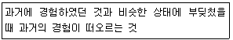
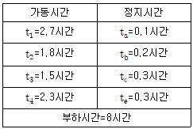
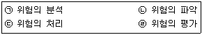
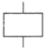
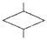
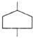
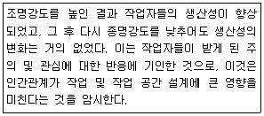
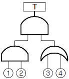
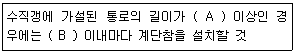
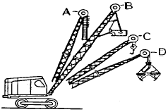

건설안전산업기사 (2019-09-21 기출문제)
1과목: 산업안전관리론
1. 팀워크에 기초하여 위험요인을 작업시작 전에 발견, 파악하고 그에 따른 대책을 강구하는 위험예지훈련에 해당하지 않는 것은?
- 감수성 훈련
- 집중력 훈련
- 즉흥적 훈련
- 문제해결 훈련
(정답률: 61%)

2. 산업재해의 분류방법에 해당하지 않는 것은?
- 통계적 분류
- 상해 종류에 의한 분류
- 관리적 분류
- 재해 형태별 분류
(정답률: 66%)
3. 안전교육의 순서가 옳게 나열된 것은?
- 준비-제시-적용-확인
- 준비-확인-제시-적용
- 제시-준비-확인-적용
- 제시-준비-적용-확인
(정답률: 67%)
4. 무재해운동의 근본이념으로 가장 적절한 것은?
- 인간존중의 이념
- 이윤추구의 이념
- 고용증진의 이념
- 복리증진의 이념
(정답률: 85%)
5. 산업안전보건법령상 산업재해의 정의로 옳은 것은?
- 고의성 없는 행동이나 조건이 선행되어 인명의 손실을 가져올 수 있는 사건
- 안전사고의 결과로 일어난 인명피해 및 재산손실
- 근로자가 업무에 관계되는 설비 등에 의하여 사망 또는 부상하거나 질병에 걸리는 것
- 통제를 벗어난 에너지의 광란으로 인하여 입은 인명과 재산의 피해 현상
(정답률: 70%)
6. 다음 중 적성배치 시 작업자의 특성과 가장 관계가 적은 것은?
- 연령
- 작업조건
- 태도
- 업무경력
(정답률: 61%)
7. 파블로프(Pavlov)의 조건반사설에 의한 학습이론의 원리에 해당되지 않는 것은?
- 일관성의 원리
- 시간의 원리
- 강도의 원리
- 준비성의 원리
(정답률: 58%)
8. 교육훈련의 평가방법에 해당하지 않는 것은?
- 관찰법
- 모의법
- 면접법
- 테스트법
(정답률: 53%)
9. 산업안전보건법령상 안전모의 성능시험 항목 6가지 중 내관통성시험, 충격흡수성시험, 내전압성시험, 내수성시험 외의 나머지 2가지 성능시험 항목으로 옳은 것은?
- 난연성시험, 턱끈풀림시험
- 내한성시험, 내압박성시험
- 내답발성시험, 내식성시험
- 내산성시험, 난연성시험
(정답률: 80%)
10. 직장에서의 부적응 유형 중, 자기 주장이 강하고 대인관계가 빈약하며, 사소한 일에 있어서도 타인이 자신을 제외했다고 여겨 악의를 나타내는 특징을 가진 유형은?
- 망상인격
- 분열인격
- 무력인격
- 강박인격
(정답률: 77%)
11. 개인과 상황변수에 대한 리더쉽의 특징으로 옳은 것은? (단, 비교대상은 헤드쉽(Headship)으로 한다.) (문제 오류로 가답안 발표시 2번으로 발표되었지만 확정답안 발표시 1, 2, 4번이 정답처리 되었습니다. 여기서는 가답안인 2번을 누르면 정답 처리 됩니다.)
- 권한행사:선출된 리더
- 권한근거:개인능력
- 지휘형태:권위주의적
- 권한귀속:집단목표에 기여한 공로인정
(정답률: 74%)
12. 상해의 종류별 분류에 해당하지 않는 것은?
- 골절
- 중독
- 동상
- 감전
(정답률: 52%)
13. 기억과정 중 다음의 내용이 설명하는 것은?

- 재생
- 기명
- 파지
- 재인
(정답률: 67%)
14. 알더퍼(Alderfer)의 ERG이론에 해당하지 않는 것은?
- 생존 욕구
- 관계 욕구
- 안전 욕구
- 성장 욕구
(정답률: 50%)
15. 자체검사의 종류 중 검사대상에 의한 분류에 포함되지 않는 것은?
- 형식검사
- 규격검사
- 기능검사
- 육안검사
(정답률: 57%)
16. 1000명 이상의 대규모 기업의 효율적이며 안전스탭이 안전에 관한 업무를 수행하고, 라인의 관리감독자에게도 안전에 관한 책임과 권한이 부여되는 조직의 형태는?
- 라인 방식
- 스탭 방식
- 라인-스탭방식
- 인간-기계방식
(정답률: 82%)
17. 안전,보건교육 계획수립에 반드시 포함하여야 할 사항이 아닌 것은?
- 교육 지도안
- 교육의 목표 및 목적
- 교육장소 및 방법
- 교육의 종류 및 대상
(정답률: 61%)
18. 근로자가 360명인 사업장에서 1년 동안 사고로 인한 근로손실일수가 210일 이었다.강도율은 약 얼마인가? (단, 근로자 1일 8시간씩 연간 300일을 근무하였다.)
- 0.20
- 0.22
- 0.24
- 0.26
(정답률: 58%)
19. 산업안전보건법령상 일용근로자의 안전,보건교육 과정별 교육시간 기준으로 틀린 것은? (단, 도매업과 숙박 및 음식점업 사업장의 경우는 제외한다.)
- 채용 시의 교육:1시간 이상
- 작업내용 변경 시의 교육:2시간 이상
- 건설업 기초안전 보건교육(건설일용근로자):4시간
- 특별교육:2시간 이상(흙막이 지보공의 보강 또는 동바리를 설치하거나 해체하는 작업에 종사하는 일용 근로자)
(정답률: 65%)
20. 산업안전보건법령상 안전 보건표지의 종류에 관한 설명으로 옳은 것은?
- ‘위험장소’는 경고표지로서 바탕은 노란색, 기본모형은 검은색, 그림은 흰색으로 한다.
- ‘출입금지’는 금지표지로서 바탕은 흰색, 기본모형은 빨간색, 그림은 검은색으로 한다.
- ‘녹십자표지’는 안내표지로서 바탕은 흰색, 기본모형과 관련 부호는 녹색, 그림은 검은색으로 한다.
- ‘안전모착용’은 경고표지로서 바탕은 파란색, 관련 그림은 검은 색으로 한다.
(정답률: 58%)
2과목: 인간공학 및 시스템안전공학
21. 다음의 데이터를 이용하여 MTBF를 구하면 약 얼마인가?

- 1.8시간/회
- 2.1시간/회
- 2.8시간/회
- 3.1시간/회
(정답률: 54%)
22. 입식작업을 위한 작업대의 높이를 결정하는데 있어 고려하여야 할 사항과 가장 관계가 적은 것은?
- 작업의 빈도
- 작업자의 신장
- 작업물의 크기
- 작업물의 무게
(정답률: 55%)
23. FTA(Fault Tree Analysis)에 의한 재해 사려연구 순서 중 3단계에 해당하는 것은?
- FT도의 작성
- 개선계획의 작성
- 톱 사상의 선정
- 사상의 재해 원인의 규명
(정답률: 57%)
24. 실내의 빛을 효과적으로 배분하고 이용하기 위하여 실내면의 반사율을 결정해야 한다. 다음 중 반사율이 가장 높아야 하는 곳은?
- 벽
- 바닥
- 가구 및 책상
- 천장
(정답률: 71%)
25. 급작스러운 큰 소음으로 인하여 생기는 생리적 변화가 아닌 것은?
- 혈압상승
- 근육이완
- 동공팽창
- 심장박동수 증가
(정답률: 73%)
26. 인간-기계시스템 설계의 주요 단계를 6단계로 구분하였을 때 3단계인 기본설계에 해당하지 않는 것은?
- 직무분석
- 기능의 할당
- 보조물의 설계 결정
- 인간 성능 요건 명세 결정
(정답률: 43%)
27. 산업안전을 목적을 ERDA(미국 에너지연구개발청)에서 개발된 시스템안전 프로그램으로 관리, 설계, 생산, 보전 등의 넓은 범위의 안전성을 검토하기 위한 기법은?
- FTA
- MORT
- FHA
- FMEA
(정답률: 58%)
28. 인간과 기계의 능력에 대한 실용성 한계에 관한 설명으로 틀린 것은?
- 기능의 수행이 유일한 기준은 아니다.
- 상대적인 비교는 항상 변하기 마련이다.
- 일반적인 인간과 기계의 비교가 항상 적용된다
- 최선의 성능을 마련하는 것이 항상 중요한 것은 아니다.
(정답률: 64%)
29. 다음의 위험관리 단계를 순서대로 나열한 것으로 맞는 것은?

- ㉠→㉡→㉣→㉢
- ㉡→㉠→㉣→㉢
- ㉠→㉢→㉡→㉣
- ㉡→㉢→㉠→㉣
(정답률: 67%)
30. 작업자가 평균 1000시간 작업을 수행하면서 4회의 실수를 한다면, 이 사람이 10시간 근무했을 경우의 신뢰도는 약 얼마인가?
- 0.018
- 0.04
- 0.67
- 0.96
(정답률: 44%)
31. 이동전화의 설계에서 사용선 개선을 위해 사용자의 인지적 특성이 가장 많이 고려되어야 하는 사용자 인터페이스 요소는?
- 버튼의 크기
- 전화기의 색깔
- 버튼의 간격
- 한글 입력 방식
(정답률: 63%)
32. 시스템 안전(System safety)에 관한 설명으로 맞는 것은?
- 과학적, 공학적 원리를 적용하여 시스템의 생산성 극대화
- 사고나 질병으로부터 자기 자신 또는 타인을 안전하게 호신하는 것
- 시스템 구성 요인의 효율적 활용으로 시스템 전체의 효율성 증가
- 정해진 제약 조건하에서 시스템이 받는 상해나 손상을 최소화하는 것
(정답률: 52%)
33. FTA에서 사용되는 논리기호 중 기본사상은?



(정답률: 70%)
34. 시각적 표시장치와 비교하여 청각적표시장치를 사용하기 적당한 경우는?
- 메시지가 짧다
- 메시지가 복잡하다
- 한 자리에서 일을 한다.
- 메시지가 공간적 위치를 다룬다.
(정답률: 64%)
35. 안전색채와 표시사항이 맞게 연결된 것은?
- 녹색-안내표시
- 황색-금지표시
- 적색-경고표시
- 회색-지시표시
(정답률: 61%)
36. 근골격계 질환을 예방하기 위한 관리적 대책으로 맞는 것은?
- 작업공간 배치
- 작업재료 변경
- 작업순환 배치
- 작업공구 설계
(정답률: 64%)
37. 다음과 같은 시험 결과는 어느 실험에 의한 것인가?

- Birds실험
- Compes실험
- Hawthorne 실험
- Heinrich 실험
(정답률: 57%)
38. 작업종료 후에도 체내에 쌓인 젖산을 제거하기 위하여 추가로 요구되는 산소량을 무엇이라고 하는가?
- ATP
- 에너지대사율
- 산소부채
- 산소최대섭취능
(정답률: 62%)
39. 다음의 FT도에서 최소 컷셋으로 맞는 것은?

- {1,2,3,4}
- {1,2,3}, {1,2,4}
- {1,3,4}, {2,3,4}
- {1,3}, {1,4}, {2,3}, {2,4}
(정답률: 63%)
40. 조종장치의 저항 중 갑작스러운 속도의 변화를 막고 부드러운 제어 동작을 유지하게 해주는 저항은?
- 점성저항
- 관성저항
- 마찰저항
- 탄성저항
(정답률: 53%)
3과목: 건설시공학
41. 대형봉상진동기를 진동과 워터젯에 의해 소정의 깊이까지 삽입하고 모래를 진동시켜 지반을 다지는 연약지반 개량공법은?
- 고결안정공법
- 인공동결공법
- 전기화학공법
- Vibro Flotation공법
(정답률: 71%)
42. 철골세우기용 기계가 아닌 것은?
- 드래그라인
- 가이 데릭
- 타워크레인
- 트럭크레인
(정답률: 65%)
43. 타워크레인 등의 시공장비에 의해 한 번에 설치하고 탈형만 하므로 사용할 때마다 부재의 조립 및 분해를 반복하지 않아 평면상 상하부 동일단면의 벽식 구조인 아파트 건축물에 적용효과가 큰 대형 벽체거푸집은?
- 갱폼(Gang form)
- 유로폼(Euro form)
- 트래블링 폼(Traveling form)
- 슬라이딩 폼(Sliding form)
(정답률: 67%)
44. 강말뚝(H형강, 강관말뚝)에 관한 설명으로 옳지 않은 것은?
- 깊은지지층까지 도달시킬 수 있다.
- 휨강성이 크고 수평하중과 충격력에 대한 저항이 크다.
- 부식에 대한 내구성이 뛰어나다
- 재질이 균일하고 절단과 이음이 쉽다.
(정답률: 62%)
45. 구조물의 시공과정에서 발생하는 구조물의 팽창 또는 수축과 관련된 하중으로, 신축량이 큰 장경간, 연도, 원자력발전소 등을 설계할 때나 또는 일교차가 큰 지역의 구조물에 고려해야 하는 하중은?
- 시공하중
- 충격 및 진동하중
- 온도하중
- 이동하중
(정답률: 72%)
46. 강구조공사 시 볼트의 현장시공에 관한 설명으로 옳지 않은 것은?
- 볼트 조임 작업 전에 마찰접합면의 녹, 밀스케일 등은 마찰력 확보를 위하여 제거하지 않는다.
- 마찰내력을 저감시킬수 있는 틈이 있는 경우에는 끼움판을 삽입해야 한다
- 현장조임은 1차 조임, 마킹, 2차 조임(본조임), 육안검사의 순으로 한다.
- 1군의 볼트조임은 중앙부에서 가장자리의 순으로 한다.
(정답률: 72%)
47. 턴키도급(Turn-Key Base Contract)의 특징이 아닌 것은?
- 공기,품질 등의 결함이 생길 때 발주자는 계약자에게 쉽게 책임을 추궁할 수 있다.
- 설계와 시공이 일괄로 진행된다.
- 공사비의 절감과 공기단축이 가능하다
- 공사기간 중 신공법, 신기술의 적용이 불가하다.
(정답률: 67%)
48. 콘크리트 공사 시 거푸집 측압의 증가 요인에 관한 설명으로 옳지 않은 것은?
- 콘크리트의 타설 속도가 빠를수록 증가한다.
- 콘크리트의 슬럼프가 클수록 증가한다.
- 콘크리트에 대한 다짐이 적을수록 증가한다.
- 콘크리트의 경화속도가 늦을수록 증가한다.
(정답률: 67%)
49. 건설공사에서 래머(Rammer)의 용도는?
- 철근절단
- 철근절곡
- 잡석다짐
- 토사적재
(정답률: 70%)
50. 콘크리트의 탄산화에 관한 설명으로 옳지 않은 것은?
- 일반적으로 경량콘크리트는 탄산화의 속도가 매우 느리다
- 경화한 콘크리트의 수산화석회가 공기 중의 탄산가스의 영향을 받아 탄산석회로 변화하는 현상을 말한다.
- 콘크리트의 탄산화에 의해 강재표면의 보호피막이 파괴되어 철근의 녹이 발생하고, 궁극적으로 피복 콘크리트를 파괴한다.
- 조강 포틀랜드시멘트를 사용하면 탄산화를 늦출 수 있다.
(정답률: 52%)
51. 경쟁입찰에서 예정가격 이하의 최저가격으로 입찰한 자 순으로 당해계약 이행능력을 심사하여 낙찰자를 선정하는 방식은? (문제 오류로 가답안 발표시 2번으로 발표되었지만 확정답안 발표시 2, 3번이 정답처리 되었습니다. 여기서는 가답안인 2번을 누르면 정답 처리 됩니다.)
- 제한적 평균가 낙찰제
- 적격심사제
- 최적격 낙찰제
- 부찰제
(정답률: 73%)
52. 공사 또는 제품의 품질상태가 만족한 상태에 있는가의 여부를 판단하는데 가장 적합한 품질관리 기법은?
- 특성요인도
- 히스토그램
- 파레토그램
- 체크시트
(정답률: 41%)
53. H-Pile+토류판 공법이라고도 하며 비교적 시공이 용이하나, 지하수위가 높고 투수성이 큰 지반에서는 차수공법을 병행해야 하고, 연약한 지층에서는 히빙현상이 생길 우려가 있는 것은?
- 지하연속벽공법
- 시트파일공법
- 엄지말뚝공법
- 주열벽공법
(정답률: 50%)
54. 용접 시 나타나는 결함에 관한 설명으로 옳지 않은 것은?
- 위핑홀(weeping hole):용접 후 냉각 시 용접부위에 공기가 포함되어 공극이 발생되는 것
- 오버랩(overlap):용접금속과 모재가 융합되지 않고 겹쳐지는 것
- 언더컷(undercut):모재가 녹아 용착금속이 채워지지 않고 홈으로 남게 된 부분
- 슬래그(Slag)감싸기:용접봉의 피복재 심선과 모재가 변하여 생긴 회분이 용착금속 내에 혼입된 것
(정답률: 49%)
55. 강구조물에 실시하는 녹막이 도장에서 도장하는 작업 중이거나 도료의 건조기간 중 도장하는 장소의 환경 및 기상조건이 좋지 않아 공사감독자가 승인할 때까지 도장이 금지되는 상황이 아닌 것은?
- 주위의 기온이 5℃ 미만일 때
- 상대습도가 85% 이하일 때
- 안개가 끼었을 때
- 눈 또는 비가 올 때
(정답률: 60%)
56. 콘크리트를 타설하는 펌프차에서 사용하는 압송장치의 구조방식과 가장 거리가 먼 것은?
- 압축공기의 압력에 의한 방식
- 피스톤으로 압송하는 방식
- 튜브 속의 콘크리트를 짜내는 방식
- 물의 압력으로 압송하는 방식
(정답률: 54%)
57. 철근콘크리트 공사 시 철근의 정착위치로 옳지 않은 것은?
- 벽철근은 기둥 보 또는 바닥판에 정착한다.
- 바닥철근은 기둥에 정착한다.
- 큰보의 주근은 기둥에, 작은보의 주근은 큰보에 정착한다.
- 기둥의 주근은 기초에 정착한다.
(정답률: 50%)
58. 고장력볼트접합에 관한 설명으로 옳지 않은 것은?
- 현장에서의 시공설비가 간편하다.
- 접합부재 상호간의 마찰력에 의하여 응력이 전달된다.
- 불량개소의 수정이 용이하지 않다.
- 작업 시 화재의 위험이 적다,
(정답률: 62%)
59. 철근공사 작업시 유의사항으로 옳지 않은 것은?
- 철근공사 착공 전 구조도면과 구조계산서를 대조하는 확인작업 수행
- 도면오류를 파악한 후 정정을 요구하거나 철근상세도를 구조평면도에 표시하여 승인 후 시공
- 품질이 규격값 이하인 철근의 사용배제
- 구부러진 철근은 다시 펴는 가공작업을 거친 후 재사용
(정답률: 77%)
60. 도급제도 중 긴급 공사일 경우에 가장 적합한 것은?
- 단가 도급 계약 제도
- 분할 도급 계약 제도
- 일식 도급 계약 제도
- 정액 도급 계약 제도
(정답률: 56%)
4과목: 건설재료학
61. 미장재료인 회반죽을 혼합할 때 소석회와 함께 사용되는 것은?
- 카세인
- 아교
- 목섬유
- 해초풀
(정답률: 72%)
62. 내화벽돌에 관한 설명으로 옳은 것은?
- 내화점토를 원료로 하여 소성한 벽돌로서, 내화도는 600~800℃의 범위이다.
- 표준형(보통형)벽돌의 크기는 250x120x60mm이다.
- 내화벽돌의 종류에 따라 내화 모르타르도 반드시 그와 동질의 것을 사용하여야 한다.
- 내화도는 일반벽돌과 동등하며 고온에서보다 저온에서 경화가 잘 이루어진다.
(정답률: 50%)
63. 골재의 수량과 관련된 설명으로 옳지 않은 것은?
- 흡수량:습윤상태의 골재 내외에 함유하는 전수량
- 표면수량: 습윤상태의 골재표면의 수량
- 유효흡수량: 흡수량과 기건상태의 골재 내에 함유된 수량의 차
- 절건상태: 일정 질량이 될 때까지 110℃ 이하의 온도로 가열 건조한 상태
(정답률: 35%)
64. 중용열 포틀랜드시멘트의 일반적인 특징 중 옳지 않은 것은?
- 수화발열량이 적다.
- 초기강도가 크다
- 건조수축이 적다.
- 내구성이 우수하다.
(정답률: 53%)
65. 다음 시멘트 중 조기강도가 가장 큰 시멘트는?
- 보통포틀랜드 시멘트
- 고로 시멘트
- 알루미나 시멘트
- 실리카 시멘트
(정답률: 52%)
66. 목재 건조방법 중 인공건조법이 아닌 것은?
- 증기건조법
- 수침법
- 훈연건조법
- 진공건조법
(정답률: 62%)
67. 비철금속에 관한 설명으로 옳은 것은?
- 알루미늄은 융점이 높기 때문에 용해주조도는 좋지 않으나 내화성이 우수하다.
- 황동은 동과 주석 또는 기타의 원소를 가하여 합금한 것으로, 청동과 비교하여 주조성이 우수하다.
- 니켈은 아황산가스가 있는 공기에서는 부식되지 않지만 수중에서는 색이 변한다.
- 납은 내식성이 우수하고 방사선의 투과도가 낮아 건축에서 방사선 차폐용 벽체에 이용된다.
(정답률: 57%)
68. 다음 유리 중 현장에서 절단 가공할 수 없는 것은?
- 망입 유리
- 강화유리
- 소다석회 유리
- 무늬 유리
(정답률: 66%)
69. 시멘트가 시간의 경과에 따라 조직이 굳어져 최종강도에 이르기까지 강도가 서서히 커지는 상태를 무엇이라고 하는가?
- 중성화
- 풍화
- 응결
- 경화
(정답률: 66%)
70. 다음 미장재료 중 균열 발생이 가장 적은 것은?
- 회반죽
- 시멘트 모르타르
- 경석고 플라스터
- 돌로마이트 플라스터
(정답률: 42%)
71. 내열성 내한성이 우수한 열경화성 수지로 60~260℃의 범위에서는 안정하고 탄성이 있으며 내후성 및 내화학성이 우수한 것은?
- 폴리에틸렌 수지
- 염화비닐 수지
- 아크릴 수지
- 실리콘 수지
(정답률: 47%)
72. 열적외선을 반사하는 은소재 도막으로 코팅하여 방사율과 열관류율을 낮추고 가시광선 투과율을 높인 유리는?
- 스팬드럴 유리
- 배강도유리
- 로이유리
- 에칭유리
(정답률: 52%)
73. 방사선 차폐용 콘크리트 제작에 사용되는 골재로서 적합하지 않은 것은?
- 흑요석
- 적철광
- 중정석
- 자철광
(정답률: 54%)
74. 경화제를 필요로 하는 접착제로서 그 양의 다소에 따라 접착력이 좌우되며 내산, 내알칼리, 내수성이 뛰어나고 금속 접착에 특히 좋은 것은?
- 멜라민수지 접착제
- 페놀수지 접착제
- 에폭시수지 접착제
- 푸란수지 접착제
(정답률: 66%)
75. 한중콘크리트의 계획배합 시 물결합재비는 원칙적으로 얼마 이하로 하여야 하는가?
- 50%
- 55%
- 60%
- 65%
(정답률: 63%)
76. 목재의 가공제품인 MDF에 관한 설명으로 옳지 않은 것은?
- 샌드위치 판넬이나 파티클 보드 등 다른 보드류 제품에 비해 매우 경량이다.
- 습기에 약한 결정이 있다.
- 다른 보드류에 비하여 곡면가공이 용이한 편이다.
- 가공성 및 접착성이 우수하다.
(정답률: 56%)
77. 금속의 부식 방지대책으로 옳지 않은 것은?
- 가능한 한 두 종의 서로 다른 금속은 틈이 생기지 않도록 밀착시켜서 사용한다.
- 균질한 것을 선택하고 사용할 때 큰 변형을 주지 않도록 주의한다.
- 표면을 평활, 청결하게 하고 가능한 한 건조상태를 유지하며 부분적인 녹은 빨리 제거한다.
- 큰 변형을 준 것은 가능한 한 풀림하여 사용한다.
(정답률: 62%)
78. 두꺼운 아스팔트 루핑을 4각형 또는 6각형 등으로 절단하여 경사지붕재로 사용되는 것은?
- 아스팔트 싱글
- 망상 루핑
- 아스팔트 시트
- 석면 아스팔트 펠트
(정답률: 43%)
79. 집성목재에 관한 설명으로 옳지 않은 것은?
- 옹이, 균열 등의 각종 결점을 제거하거나 이를 적당히 분산시켜 만든 균질한 조직의 인공목재이다.
- 보, 기둥, 아치, 트러스 등의 구조재료로 사용할 수 있다.
- 직경이 작은 목재들을 접착하여 장대제로 활용할 수 있다.
- 소재를 약제처리 후 집성 접착하므로 양산이 어려우며, 건조균열 및 변형 등을 피할 수 없다.
(정답률: 50%)
80. 퍼티, 코킹, 실런트 등의 총칭으로서 건축물의 프리패브 공법, 커튼월 공법 등의 공장 생산화가 추진되면서 주목받기 시작한 재료는?
- 아스팔트
- 실링재
- 셀프 레벨링재
- FRP 보강재
(정답률: 67%)
5과목: 건설안전기술
81. 철골작업을 중지하여야 하는 강우량 기준으로 옳은 것은?
- 시간당 1mm 이상인 경우
- 시간당 3mm 이상인 경우
- 시간당 5mm 이상인 경우
- 시간당 1cm 이상인 경우
(정답률: 67%)
82. 건설공사현장에서 재해방지를 위한 주의사항으로 옳지 않은 것은?
- 야간작업을 할 때나 어두운 곳에서 작업할 때 채광 및 조명설비는 작업에 지장이 있더라도 물건을 식별할 수 있을 정도의 조도만을 확보, 유지하면 된다.
- 불안전한 가설물이 있나 확인하고 특히 작업발판, 안전난간 등의 안전을 점검한다.
- 과격한 노동으로 심히 피로한 노무자는 휴식을 취하게 하여 피로회복 후 작업을 시킨다.
- 작업장을 잘 정돈하여 안전사고 요인을 최소화한다.
(정답률: 71%)
83. 이동식비계를 조립하여 작업을 하는 경우에 준수해야 할 사항과 거리가 먼 것은?
- 비계의 최상부에서 작업을 하는 경우에는 안전난간을 설치할 것
- 작업발판의 최대적재하중은 250kg을 초과하지 않도록 할 것
- 승강용사다리는 견고하게 설치할 것
- 지주부재와 수평면과의 기울기를 75° 이하로 하고, 지주부재와 지주부재 사이를 고정시키는 보조부재를 설치할 것
(정답률: 47%)
84. 부두 안벽 등 하역작업을 하는 장소에 대하여 부두 또는 안벽의 선을 따라 통로를 설치할 때 통로의 최소 폭 기준은?
- 70cm 이상
- 80cm 이상
- 90cm 이상
- 100cm 이상
(정답률: 67%)
85. 비계의 수평재의 최대 휨모멘트가 50000x102Nㆍmm, 수평재의 단면 계수가 5x106Nㆍmm3일 때 휨응력(σ)은 얼마인가?
- 0.5MPa
- 1MPa
- 2MPa
- 2.5MPa
(정답률: 49%)
86. 추락재해방지를 위한 방망의 그물코의 크기는 최대 얼마 이하이어야 하는가?
- 5cm
- 7cm
- 10cm
- 15cm
(정답률: 59%)
87. 다음 중 유해 위험방지계획서 제출 시 첨부해야하는 서류와 가장 거리가 먼 것은?
- 건축물 각 층의 평면도
- 기계, 설비의 배치도면
- 원재료 및 제품의 취급, 제조 등의 작업방법의 개요
- 비상조치계획서
(정답률: 39%)
88. 토석붕괴의 요인 중 외적 요인이 아닌 것은?
- 토석의 강도저하
- 사면, 법면의 경사 및 기울기의 증가
- 절토 및 성토 높이의 증가
- 공사에 의한 진동 및 반복하중의 증가
(정답률: 61%)
89. 철근가공작업에서 가스절단을 할 때의 유의사항으로 옳지 않은 것은?
- 가스절단 작업 시 호스는 겹치거나 구부러지거나 밟히지 않도록 한다.
- 호스, 전선 등은 작업효율을 위하여 다른 작업장을 거치는 곡선상의 배선이어야 한다.
- 작업장에서 가연성 물질에 인접하여 용접 작업할 때에는 소화기를 비치하여야 한다.
- 가스절단 작업 중에는 보호구를 착용하여야 한다.
(정답률: 71%)
90. 인력에 의한 하물 운반 시 준수사항으로 옳지 않은 것은?
- 수평거리 운반을 원칙으로 한다.
- 운반시의 시선은 진행방향을 향하고 뒷걸음 운반을 하여서는 아니 된다.
- 쌓여있는 하물을 운반할 때에는 중간 또는 하부에서 뽑아내어서는 아니 된다.
- 어깨 높이보다 낮은 위치에서 하물을 들고 운반하여서는 아니 된다.
(정답률: 66%)
91. 사다리식 통로의 설치기준으로 옳지 않은 것은?
- 발판과 벽과의 사이는 15cm 이상의 간격을 유지할 것
- 사다리의 상단은 걸쳐놓은 지점으로부터 40cm 이상 올라가도록 할 것
- 폭은 30cm 이상으로 할 것
- 사다리식 통로의 기울기는 75° 이하로 할 것
(정답률: 58%)
92. 거푸집 공사 관련 재료의 선정 시 고려사항으로 옳지 않은 것은?
- 목재거푸집: 흠집 및 옹이가 많은 거푸집과 합판은 사용을 금지한다.
- 강재거푸집: 형상이 찌그러진 것은 교정한 후에 사용한다.
- 지보공재: 변형, 부식이 없는 것을 사용한다.
- 연결재: 연결부위의 다양한 형상에 적응 가능한 소철선을 사용한다.
(정답률: 52%)
93. 흙의 휴식각에 관한 설명으로 옳지 않은 것은?
- 흙의 마찰력으로 사면과 수평면이 이루는 각도를 말한다.
- 흙의 종류 및 함수량 등에 따라 다르다.
- 흙파기의 경사각은 휴식각의 1/2로 한다.
- 안식각이라고도 한다.
(정답률: 54%)
94. 가열에 사용되는 가스 등의 용기를 취급하는 경우에 준수하여야 할 사항으로 옳지 않은 것은?
- 밸브의 개폐는 최대한 빨리 할 것
- 전도의 위험이 없도록 할 것
- 용기의 온도를 섭씨 40도 이하로 유지할 것
- 운반하는 경우에는 캡을 씌울 것
(정답률: 64%)
95. 달비계(곤돌라의 달비계는 제외)의 최대 적재하중을 정하는 경우 달기 체인 및 달기훅의 안전계수 기준으로 옳은 것은?
- 2 이상
- 3 이상
- 5 이상
- 10 이상
(정답률: 52%)
96. 다음은 가설통로를 설치하는 경우 준수하여야 할 사항이다. ( )안에 들어갈 내용으로 옳은 것은?

- A: 8m, B: 10m
- A: 8m, B: 7m
- A: 15m, B: 10m
- A: 15m, B: 7m
(정답률: 56%)
97. 건설업 산업안전보건관리비의 사용항목으로 가장 거리가 먼 것은?
- 안전시설비
- 사업장의 안전진단비
- 근로자의 건강관리비
- 본사 일반관리비
(정답률: 71%)
98. 다음 중 거푸집동바리 설계 시 고려하여야 할 연직방향 하중에 해당하지 않는 것은?
- 적설하중
- 풍하중
- 충격하중
- 작업하중
(정답률: 63%)
99. 다음 그림의 형태 중 클램쉘(Clam shell)장비에 해당하는 것은?

- A
- B
- C
- D
(정답률: 61%)
100. 건설현장에서 가설 계단 및 계단참을 설치하는 경우 안전율은 최소 얼마 이상으로 하여야 하는가?
- 3
- 4
- 5
- 6
(정답률: 30%)
설명: 팀워크에 기초하여 위험요인을 파악하고 대책을 강구하는 위험예지훈련은 사전에 계획되고 체계적으로 진행되는 것이 중요합니다. 그러나 즉흥적 훈련은 미리 계획하지 않고 즉흥적으로 진행되는 훈련으로, 위험예지훈련과는 다른 개념입니다. 따라서 즉흥적 훈련은 위험예지훈련에 해당하지 않습니다.